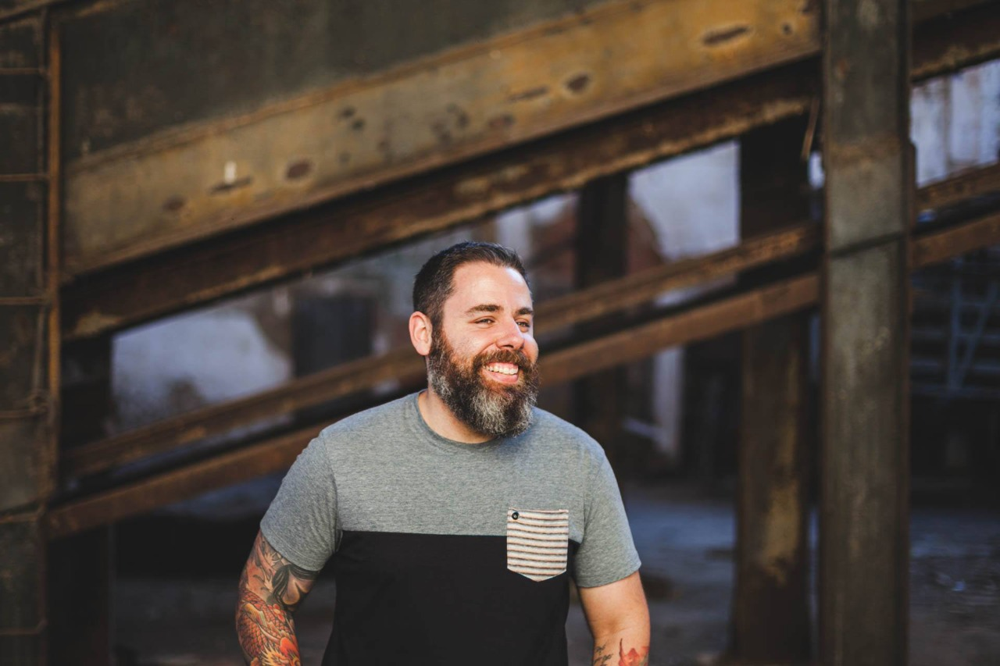

Sou formado em jornalismo e através dele conheci a fotografia mais a fundo e foi amor à primeira vista. Em 2009 resolvi seguir a minha felicidade, largar tudo, e entrar de cabeça naquilo que se tornou minha grande paixão. A fotografia mudou minha vida. Sempre fui uma pessoa mais fechada, tímida, e através dela passei a ter mais interesse nas pessoas, conhecer histórias e conta-las através de imagens. Passei a entender que a vida é uma grande jornada, e nada melhor que vive-la fazendo o que amamos, de maneira mais leve e feliz. Trabalhar com casamento é trabalhar com felicidade e me considero muito sortudo por isso.Antes de ser fotógrafo, sou pai, marido e amigo. A família é peça fundamental da minha vida. Sem ela, nada faria sentido. É nela que tiro força nos momentos mais complicados e comemoro as conquistas. Tenho tido muita sorte em poder conhecer casais que também acreditam nisso.Meu estilo de fotografia é mostrar a verdade, a entrega. Busco casais que se doem, que também acreditem que o casamento vai muito além de uma assinatura num papel. Que tenham companheirismo e sintonia. Que entendam que a vida não é perfeita, que acordamos de mau-humor, que às vezes não estamos no clima de sair. Mas que, também, rimos nos momentos difíceis e acreditamos que, juntos, superamos tudo. Então, prontos pra viverem essa jornada?